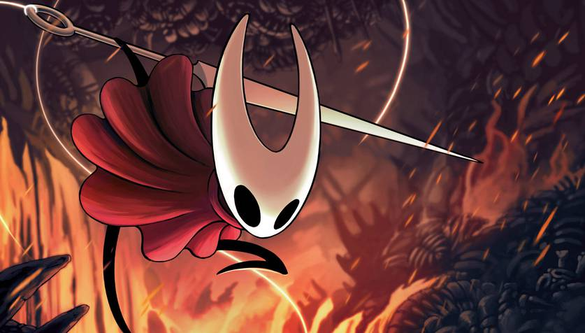

TOP 5 melhores Games para jogar em 2025
O ano promete lançamentos extremamente aguardados, e há algumas joias escondidas entre os grandes nomes
Depois de um 2023 histórico, com games incríveis sendo lançados quase semanalmente, a expectativa era de que 2024 fosse um pouco mais morno. Felizmente, estávamos errados, e uma série de títulos de peso chegou durante este ano, abraçando especialmente os fãs de RPG. Ao menos por enquanto, 2025 não alinha tantos grandes games assim, mas tem nomes que batem de frente com qualquer franquia.
5. DEATH STRANDING 2: ON THE BEACH

Hideo Kojima está de volta. Cinco anos depois, Death Stranding ganhará uma sequência que parece redobrar a aposta na estranheza. Os trailers são ainda mais incompreensíveis do que os do primeiro game, e as únicas certezas são um elenco recheado, contando com retorno de Norman Reedus e Léa Seydoux, e de uma experiência marcante — pelo bem ou pelo mal. - Breno Deolindo
Onde e quando jogar: 26 de junho|Playstation 5.
4. Hollow Knight: Silksong
Parece pegadinha, mas
realmente vai ser lançado em 2025. O game chega no dia 4 de setembro concretizando um dos ciclos de desenvolvimento mais longos e aguardados dos últimos 10 anos. Ainda não sabemos se o jogo vai atingir as gigantes expectativas que se criaram, mas é certo que todos estaremos lá para testemunhá-lo. - Breno Deolindo
Onde e quando jogar: 4 de setembro | PC, Playstation 4 e 5, Xbox one e Series X|S, Nitendo Switch 1 e 2.
3. Pokémon Legends: Z-A

Pokémon Legends: Arceus foi um dos maiores acertos recentes da Game Freak, especialmente depois que Scarlet & Violet não foram exatamente unânimes. O formato que fez sucesso estará de volta em Pokémon Legends: Z-A, que colocará o jogador nos primórdios da cidade de Lumiose, onde humanos e Pokémon convivem em harmonia. - Breno Deolindo
Onde e quando jogar: final de 2025 | Nitendo Switch.
2. Monster Hunter Wilds

Considerando o que vem sendo feito pela Capcom em seus últimos lançamentos, Monster Hunter Wilds teria tudo para ser o Top 1 desta lista em qualquer outro ano. O game parece ser digno de toda a ansiedade, expandindo demais todos os conceitos já existentes na franquia dos caçadores de criaturas, mas um novo capítulo da maior série da atualidade o coloca na segunda colocação. - Breno Deolindo
Onde e quando jogar: 28 de feveiro | Playstation 5, Xbox Seires X|S e pc.
1. Clair Obscur: Expedition 33

A grande história de sucesso de 2025 até o momento nos games é um título AA, ou seja, em um patamar menor em termos de orçamento quando comparado a vários dos jogos acima, que se inspira em RPGs clássicos do Japão com um toque especial da Belle Époque que marcou a história da França no fim do século XIX. A mistura única de influências e referências é só o chamariz para um jogo desafiador, único e que não cansa de surpreender desde os seus primeiros momentos até a batalha final. - Bruno Silva
Onde e quando jogar: 24 de abril | Playstation 5, Xbox Seiries X|S e PC.